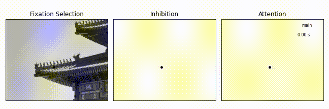

SceneWalk Model¶
This is the documentation for the SceneWalk Model Package.
Here is a link to the preprint: xxx
Here is a link to the code needed to exactly reproduce the findings from the paper: xxx
This documentation is for anyone wanting to use the SceneWalk Model on their own data and for their own research. Some words about the implementation: the idea for the infrastructure is that the model is a python object. It is instantiated with some main settings which define the mechanisms that are switched on and off. In the model extensions we added a variety of mechanisms, each one of which can be used or not in a modular way. Furthermore the model object sets various specifics on how different parameters are represented (i.e. coupled with others or on a log scale.) Lastly, The model must be given parameters. Given all these inputs the model object can be called to output likelihood values given data or to work generatively to simulate scanpaths, For details please consult the following documentation.
The package also contains modules that use the SceneWalk code to do things, such as estimate parameters or plot scan paths.
{kind=link}
Using the SceneWalk Package
Evaluation